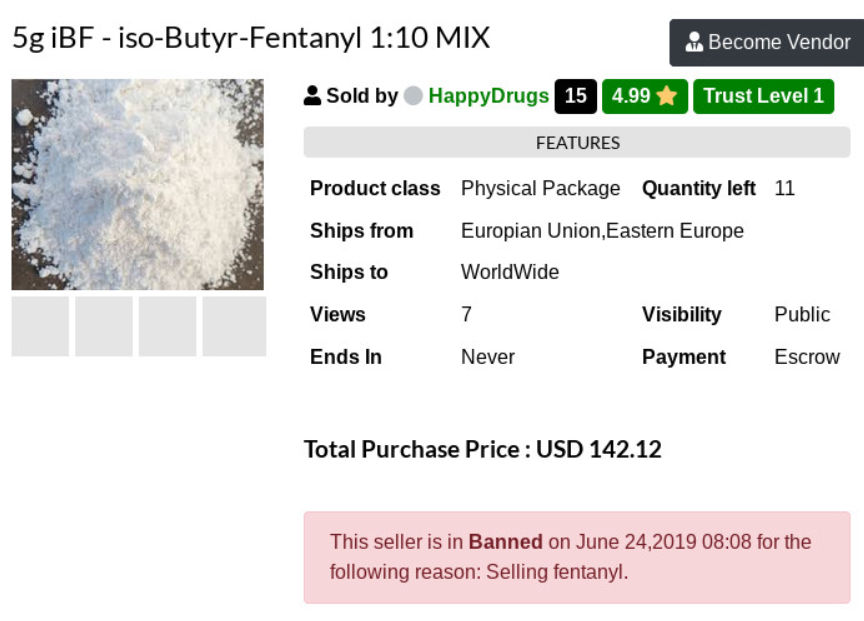
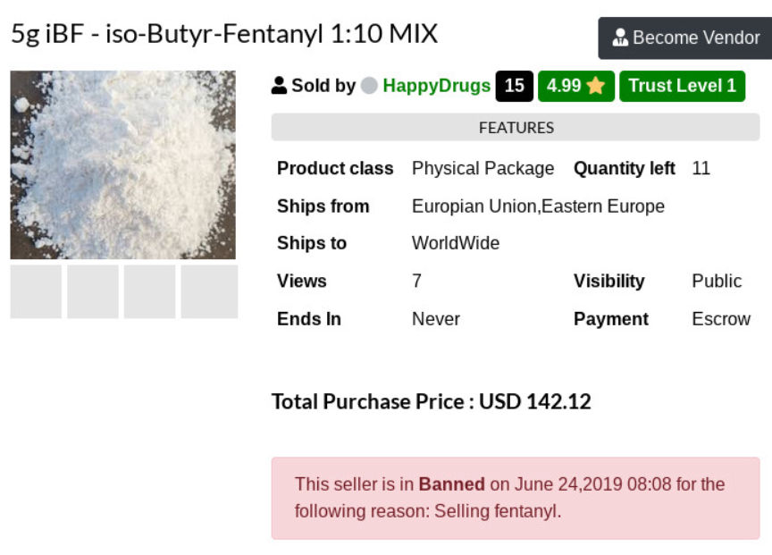

Ohio Man Admits Ordering Fentanyl from an Online Supplier
An Ohio man pleaded guilty in front of a federal judge to one count of conspiracy to import fentanyl and another count of possession of firearms while unlawfully using a controlled substance. The defendant had been ordering fentanyl from a source on the internet, court documents revealed.
According to United States Attorney Scott W. Brady, Christian B. Drennan, a former resident of Donora, Pennsylvania, pleaded guilty to conspiracy to import fentanyl and possession of a firearm as an unlawful user of a controlled substance. As a part of the plea agreement, Drennan admitted he had been importing fentanyl from suppliers online from as early as April 2018 until his arrest on September 6, 2018.
In September 2018, Homeland Security Investigations Special Agents and state police conducted a controlled delivery that resulted in Drennan’s arrest. Special Agents with Homeland Security Investigations had learned that someone using an address in Elizabeth Township—a township in Allegheny County, Pennsylvania—to receive packages of fentanyl from international suppliers.
After sitting on the drop and watching Drennan and a second individual pick up the package, state police conducted a traffic stop in a nearby parking lot. They had probable cause to search the vehicle due to the 19 grams of fentanyl found in the package Drennan had previously picked up from the Elizabeth Township address. Working with HSI Special Agents, state police then obtained a warrant for Drennan’s home.
The defendant’s house contained five pounds of dried marijuana and another 18 live plants.
Judge Conti scheduled sentencing for September 25, 2019. Drennan faces up to 30 years in federal prison for the fentanyl importation and unlawful weapon possession.
Source: DOJ
Even though he lived in Pennsylvania at the time of his arrest, there is something about residents of Ohio and fentanyl from overseas.
According to United States Attorney Scott W. Brady, Christian B. Drennan, a former resident of Donora, Pennsylvania, pleaded guilty to conspiracy to import fentanyl and possession of a firearm as an unlawful user of a controlled substance. As a part of the plea agreement, Drennan admitted he had been importing fentanyl from suppliers online from as early as April 2018 until his arrest on September 6, 2018.
In September 2018, Homeland Security Investigations Special Agents and state police conducted a controlled delivery that resulted in Drennan’s arrest. Special Agents with Homeland Security Investigations had learned that someone using an address in Elizabeth Township—a township in Allegheny County, Pennsylvania—to receive packages of fentanyl from international suppliers.
After sitting on the drop and watching Drennan and a second individual pick up the package, state police conducted a traffic stop in a nearby parking lot. They had probable cause to search the vehicle due to the 19 grams of fentanyl found in the package Drennan had previously picked up from the Elizabeth Township address. Working with HSI Special Agents, state police then obtained a warrant for Drennan’s home.
The defendant’s house contained five pounds of dried marijuana and another 18 live plants.
Judge Conti scheduled sentencing for September 25, 2019. Drennan faces up to 30 years in federal prison for the fentanyl importation and unlawful weapon possession.
Source: DOJ
Even though he lived in Pennsylvania at the time of his arrest, there is something about residents of Ohio and fentanyl from overseas.